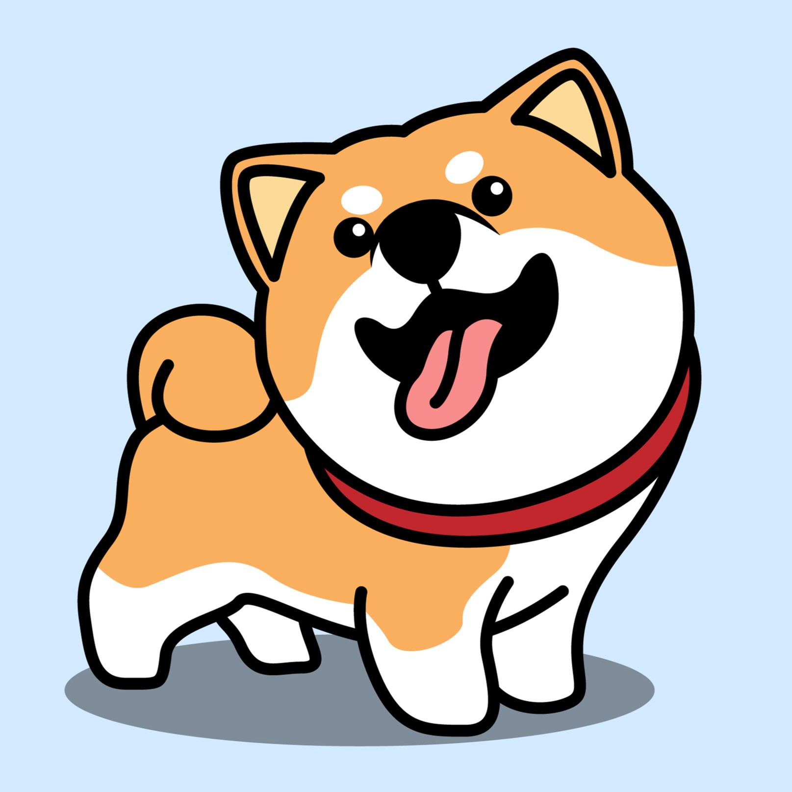
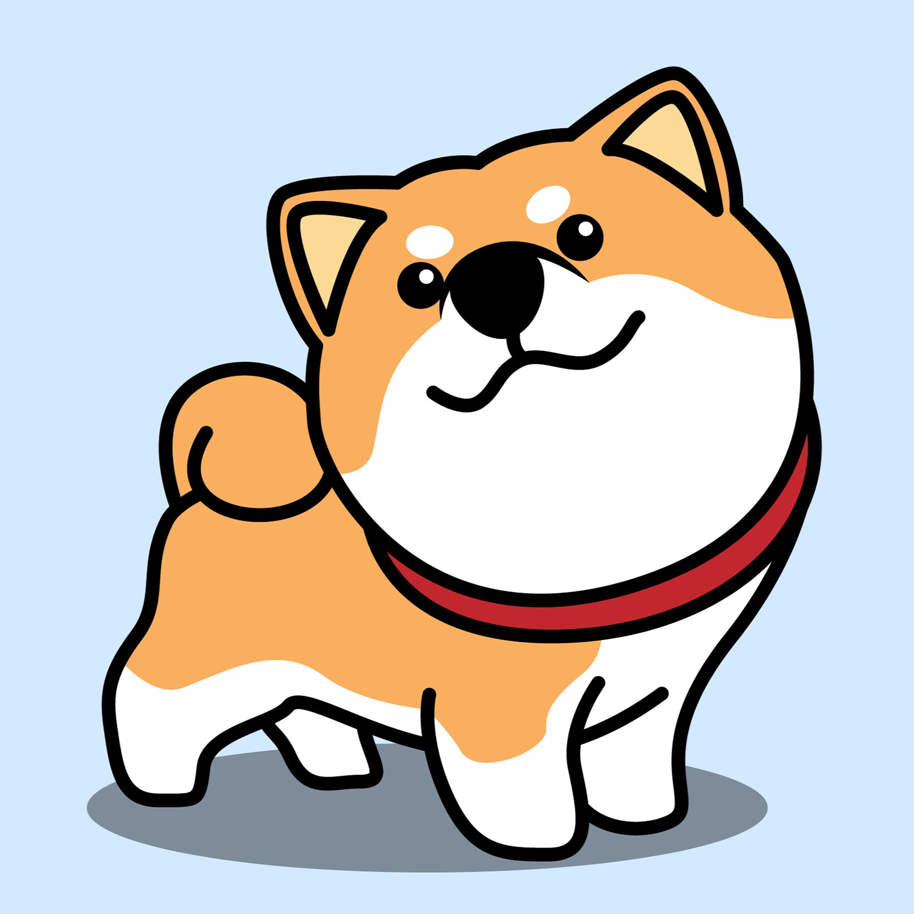

The Breed Standard
A description of the ideal dog of each recognized breed, to serve as an ideal against which dogs are judged at shows, originally laid down by a parent breed club and accepted officially by national or international bodies.
About Shiba Inu
The Shiba Inu is a breed of hunting dog from Japan. A small-to-medium breed, it is the smallest of the six original breed of dogs native to Japan. Its name literally translates to "brushwood dog", as it is used to flush game.
In popular culture
Despite not being a popular dog breed outside of Japan, the Shiba Inu has become popular on the Internet. Doge is an Internet meme from 2013 including a Shiba Inu and broken English. A popular cryptocurrency, Dogecoin, is named after this meme and its logo bears an image of the Shiba Inu. According to Jamie Cohen, an assistant professor of media studies at Queens College of the City University of New York, the Shiba Inu breed has had a significant presence in online culture since at least 2010.
List of Shiba Inu
-

Sesame Shiba Inu
-
Tan Shiba Inu
-
Urajiro Shiba Inu
-

Red Shiba Inu
Contact
- 09-66645926
- No.(5/11), Surawat (1)street, Mahar.